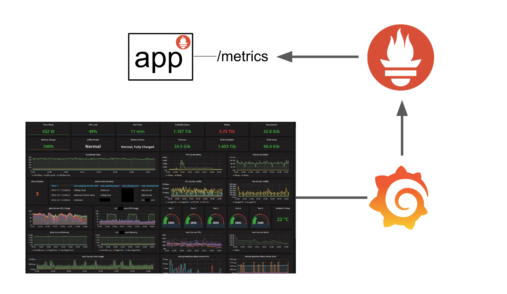

Metrics§
Prometheus is used to scrape metrics from the pod. You have to add Prometheus in your NAIS manifest to enable scrape.
Each app that have scraping enabled can use the default Grafana dashboard nais-app-dashboard, or create theire own.
NAIS manifest config§
spec:
prometheus:
enabled: true # default: false. Pod will now be scraped for metrics by Prometheus.
path: /metrics # Path where prometheus metrics are served.
JVM Application§
If you are building an app on the JVM you can use Prometheus' own Java client library. Make sure to enable scraping in the NAIS manifest.
We also recommend to export the default metrics.
DefaultExports.initialize();
Retention§
When using Prometheus the retention is 16 weeks for prod, and 4 weeks for dev. If you need data stored longer then what Prometheus support, we recommend using your own Aiven Influxdb. Then you have full control of the database and retention.
Data via push metrics/sensu is stored for one year.
Push metrics§
If you don't want to just rely on pull metrics, you can push data directly to InfluxDB via Sensu.
This is easily done by writing to the Sensu socket.
sensu.nais:3030
Example message:
{
"name": "myapp_metrics",
"type": "metric",
"handlers": ["events_nano"],
"output": "myapp.event1,tag1=x,tag2=y value=1,value2=2 1571402276000000000\nmyapp.event2,tag1=xx,tag2=yy value=42,value2=69 1571402276000000000"
}
The format of the data (The output field in the message) should be formatted as Influxdb Line Protocol.
Warning
Note that each variation of tag values will create a new time series, so avoid using tags for data that varies a lot. Read more about best practices here: InfluxDB schema design and data layout
Overview§
